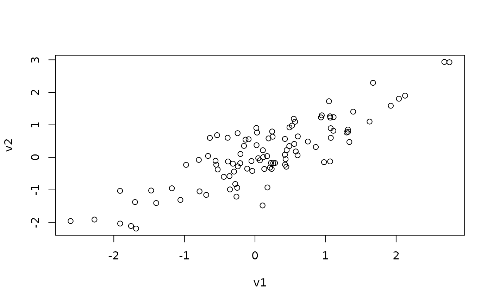

Simulate data with a specified correlation in relation to an existing variable.
See also
https://stats.stackexchange.com/a/313138/20338
Other simulation:
simulateAUC(),
simulateIndirectEffect()
Examples
v1 <- rnorm(100)
complement(y = v1, rho = .5)
#> 1 2 3 4 5 6
#> -0.60529788 0.76295606 0.13509322 -0.42615258 -0.81000259 0.28270663
#> 7 8 9 10 11 12
#> -1.66145756 -0.42271256 0.57996084 0.50095918 -0.15525571 -1.05367325
#> 13 14 15 16 17 18
#> 1.54675619 0.49767538 1.00145836 2.35726334 -0.99071066 0.66151453
#> 19 20 21 22 23 24
#> -1.29332553 0.39544195 0.71849534 -0.05375067 -1.12250775 -0.51927082
#> 25 26 27 28 29 30
#> 0.87328406 0.78923511 -1.05856681 0.87775579 0.46140809 0.74389392
#> 31 32 33 34 35 36
#> -1.19105252 0.45362879 0.19808354 0.06649333 -2.13102008 -1.17468123
#> 37 38 39 40 41 42
#> -0.53437451 0.32658183 -0.06916604 -0.38173320 -0.81142647 -0.75607649
#> 43 44 45 46 47 48
#> 1.66189615 0.88942711 1.22063476 1.08602645 -0.17690982 -1.19667402
#> 49 50 51 52 53 54
#> -0.23151260 1.81710888 -0.06098952 -0.43883884 -1.14692983 1.52309964
#> 55 56 57 58 59 60
#> 0.17847192 2.18024641 -1.37988752 2.09094898 1.06714320 0.76196405
#> 61 62 63 64 65 66
#> 1.11597319 0.09894313 -0.27496636 -0.56356245 1.69586603 0.83569976
#> 67 68 69 70 71 72
#> 0.11441873 1.36861203 1.62714188 0.34393505 -0.59508248 0.76429174
#> 73 74 75 76 77 78
#> -0.59365979 -0.64714698 -2.96216051 -0.30798042 -1.25034970 -0.83933354
#> 79 80 81 82 83 84
#> -1.72114329 2.68469262 -1.13704953 -0.98351383 0.74909312 -1.34494322
#> 85 86 87 88 89 90
#> 0.68106293 0.99432625 0.62915115 -0.46288412 -1.18411897 1.25652505
#> 91 92 93 94 95 96
#> 0.59737385 0.09406460 0.62665224 0.25578162 -0.85816601 1.02578340
#> 97 98 99 100
#> 0.52332738 -0.57520122 0.32084288 -1.27647048
complement(y = v1, rho = -.5)
#> 1 2 3 4 5 6
#> -0.43067265 -1.30248813 0.43135622 -2.40243027 -0.07062662 -0.53249468
#> 7 8 9 10 11 12
#> 0.37624627 0.68923206 1.12214552 -2.16916453 -0.88410986 1.46281266
#> 13 14 15 16 17 18
#> 0.91521573 1.12768169 -1.56861198 -0.55646411 -0.08910571 -0.48369109
#> 19 20 21 22 23 24
#> 0.24475448 1.21662574 -1.30583543 -0.34856348 -0.96588036 -0.72282118
#> 25 26 27 28 29 30
#> 1.17305015 -1.11352294 1.57680759 -2.11719885 -0.36365786 1.06435066
#> 31 32 33 34 35 36
#> -0.59126006 -0.89176123 -0.75333096 -0.09588016 -0.12432824 -1.27807202
#> 37 38 39 40 41 42
#> 0.91691876 -0.97807309 -0.45052225 1.18251585 0.88837958 -2.11346587
#> 43 44 45 46 47 48
#> -0.98258474 -0.11130939 -0.86259762 1.23433618 1.42583008 0.61541800
#> 49 50 51 52 53 54
#> 0.49227047 -0.27370014 -0.36792600 -1.64915586 -0.03572745 -0.12556321
#> 55 56 57 58 59 60
#> 0.58782937 0.23119599 0.72263920 0.21955419 0.89099410 -0.16046818
#> 61 62 63 64 65 66
#> -0.47271687 -0.90443466 -1.57445643 0.37418123 1.02189500 -2.39166973
#> 67 68 69 70 71 72
#> -1.06684449 0.11352939 -0.33069205 1.93813849 -0.13346067 -0.50034149
#> 73 74 75 76 77 78
#> 1.51090478 1.44121250 1.18144232 0.01384497 0.80909025 1.96587994
#> 79 80 81 82 83 84
#> 1.42175958 -2.03049204 -0.40087376 -0.21541119 0.26034575 -1.36091873
#> 85 86 87 88 89 90
#> -0.07207011 -1.32746304 0.69337611 0.74508760 -1.12606671 -0.54803149
#> 91 92 93 94 95 96
#> -0.74972723 -0.04181410 0.35881797 -0.26210098 1.70319137 -1.34899331
#> 97 98 99 100
#> -0.08094422 1.29841021 0.57009356 0.38317995
v2 <- complement(y = v1, rho = .85)
plot(v1, v2)
